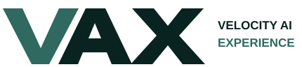
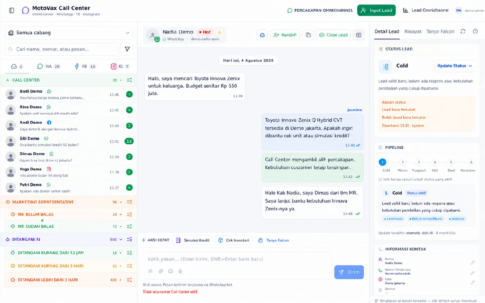

Velocity
Mempercepat respons, keputusan, dan tindakan bisnis—dari percakapan menuju outcome.

CORPORATE INTRODUCTION · 2026VELOCITY AI EXPERIENCE
VAX adalah AI venture family yang membangun pengalaman agentic untuk industri bernilai tinggi—berawal dari otomotif, berkembang ke properti, lalu bergerak ke vertical berikutnya.

02WHAT VAX STANDS FOR
Mempercepat respons, keputusan, dan tindakan bisnis—dari percakapan menuju outcome.
AI yang memahami konteks, memakai tools, bekerja dengan data, dan berkolaborasi dengan manusia.
Teknologi yang terasa sederhana bagi pelanggan, sales, operator, dan pemimpin bisnis.
Prinsip VAX: AI bukan fitur tambahan. AI adalah lapisan kerja baru dalam pengalaman pelanggan dan operasi.
ONE CORE · MANY COMPANIES
Setiap subsidiary menerjemahkan fondasi VAX ke bahasa, workflow, data, dan outcome industrinya.
Reasoning, tools, memory, guardrails, human handoff.
WhatsApp, omnichannel, realtime conversation.
Inventory, customer, pipeline, workflow, analytics.
Produk dan bahasa bisnis yang spesifik per industri.
THE VAX FAMILY
Legacy user pertama dan proving ground VAX untuk operasi otomotif.
Vertical kedua untuk developer, agency, dan sales properti.
Subsidiary berikutnya lahir dari masalah industri yang layak diselesaikan AI.
THE FIRST LEGACY USER
Lingkungan operasi nyata tempat VAX belajar menghubungkan percakapan, data, keputusan, dan manusia.
FROM AI TO HUMAN, WITH CONTEXT
Motovax mencerminkan Agentic AI WhatsApp, inventory, omnichannel, takeover, handoff, CRM, dan analytics—bukan sekadar prototype presentasi.

THE SECOND VERTICAL
Terravax membawa pola dari Motovax ke properti: memahami kebutuhan, menyaring pilihan, membantu booking site visit, dan menjaga follow-up.
HOW THE FAMILY EXPANDS
Pembelian membutuhkan konsultasi, matching, atau penjelasan.
Data dan tindakan tersebar sehingga respons kehilangan konteks.
Ada pola yang bisa dikerjakan agent secara aman dan terukur.
AI meningkatkan kapasitas manusia, tanpa menghilangkan kontrol.
THE VAX COMPOUNDING FLYWHEEL
Mulai dari masalah bernilai tinggi dan satu wedge product.
Bangun bersama legacy user dan workflow nyata.
Generalisasi tools, guardrails, data, dan experience.
Bawa fondasi matang ke peluang industri berikutnya.
VELOCITY AI EXPERIENCE
Motovax adalah awal. Terravax adalah langkah kedua. VAX berikutnya dibangun dari fondasi yang sama—AI yang memahami, bertindak, dan menciptakan pengalaman bisnis lebih cepat.
Designed to compound.
Velocity AI eXperience